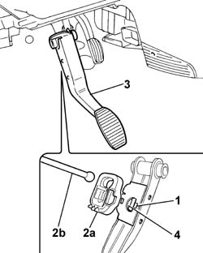
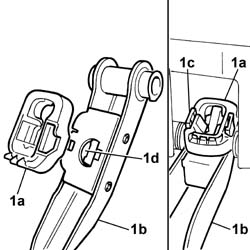

3330B22 brake pedal - r+r manual gearbox versions
- Path
- Procedures > 33 BRAKING SYSTEM > 3330 HYDRAULIC BRAKING SYSTEM > 3330B PEDAL UNIT > 3330B22 brake pedal - r+r manual gearbox versions
- Kind
- repair procedure (removal / refitting; the operation number is the code)
- Applies to
- all engines; all production periods
- Interactive page
- https://sloeber94.github.io/elrnDB-fPnd/en/#/2752725
Applies to: all engines; all production periods
 Removing
Removing
 Refitting
Refitting1. Press the tabs on the retaining device (white).
2. Remove black retainer (2a), then unscrew the pushrod of brake servo (2b) from the brake pedal.
3. Remove the brake pedal from its seat on the pedal mount.
4. Recover the brake servo pushrod ball head seat cup.

Applies to: all engines; all production periods
Refitting
RemovingPosition the brake pedal in its seat on the pedal unit.
1. Fit the new retaining device (1a) onto brake pedal (1b) to secure the retaining clips (1c). Position the cover (1d) for the brake servo push rod spherical head.

Applies to: all engines; all production periods
Lift up the brake pedal and position the brake servo push rod by the retaining device.
Press the brake pedal to engage the brake servo push rod with the retaining device.